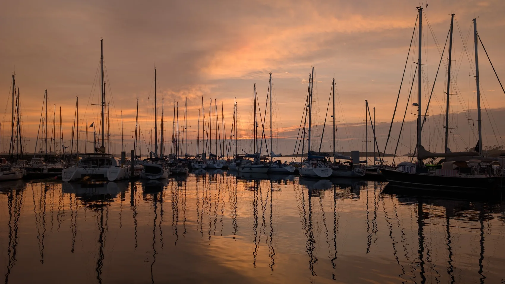

JE SOUHAITE VENDRE
Valoriser mon bateau.
Préparer une annonce claire, présenter le bateau, échanger avec les acquéreurs et organiser les visites : Julien vous aide à mener votre vente à bon port.
Demander un accompagnement
Un voilier, un bateau à moteur, un premier achat ou une nouvelle étape : Julien vous accompagne personnellement dans votre projet.
Plus qu’une annonce, l’achat ou la vente d’un bateau est une histoire de confiance, de conseils et de navigation.

Préparer une annonce claire, présenter le bateau, échanger avec les acquéreurs et organiser les visites : Julien vous aide à mener votre vente à bon port.
Demander un accompagnement
Programme de navigation, budget, usage réel : Julien vous aide à cibler les bonnes unités, les visiter et préparer leur prise en main.
Parler de ma rechercheUn seul interlocuteur, qui connaît les bateaux et peut aussi vous accompagner après votre achat.
Nous parlons du bateau, de votre budget et de votre véritable projet.
Préparation, recherche, visites et conseils : les étapes sont définies ensemble.
Selon vos besoins, Julien peut aussi proposer une formation ou organiser un convoyage.
Expliquez à Julien ce que vous souhaitez acheter ou vendre.